CODING AGENTS AS PIXEL WORLD MODELS
traex/DeepSeek-V4.1-Flash · phygen_133
点击播放 · 原生 RGB 像素
逐轮保存的候选
回放视频、检查图与代码变化。
每份候选均可单独播放。实际图片检查记录在下方工具轨迹中。
候选 01播放与检查图
点击播放 · 原生 RGB 像素
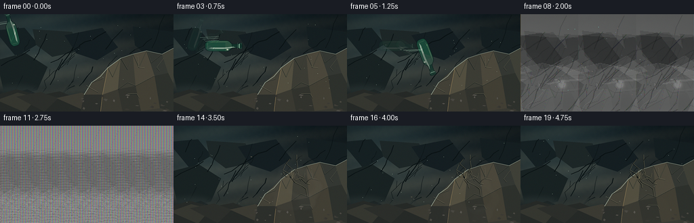
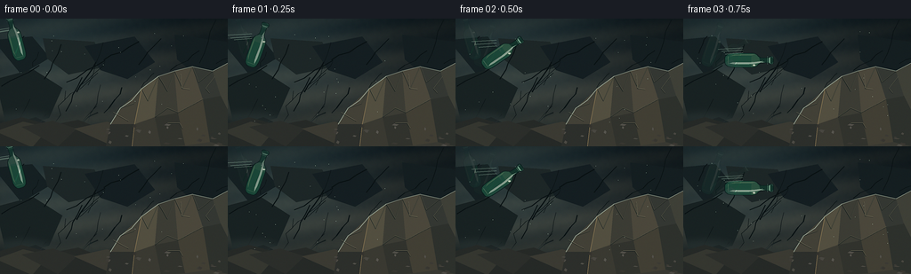
展开代码变化
--- 上一保存版本
+++ 本次保存版本
@@ -0,0 +1,553 @@
+from __future__ import annotations
+
+import math
+from pathlib import Path
+
+import numpy as np
+from PIL import Image, ImageDraw, ImageFilter
+from scipy.ndimage import gaussian_filter
+
+from artifact_io import save
+
+
+OUT_W, OUT_H = 256, 144
+SS = 4
+W, H = OUT_W * SS, OUT_H * SS
+FPS = 4
+FRAMES = 20
+IMPACT_FRAME = 8
+IMPACT = (174.0, 78.0)
+RNG = np.random.default_rng(13317)
+
+
+def sc(value):
+ return value * SS
+
+
+def polygon(draw, points, fill=None, outline=None, width=1):
+ draw.polygon([(sc(x), sc(y)) for x, y in points], fill=fill, outline=outline,
+ width=max(1, round(sc(width))))
+
+
+def line(draw, points, fill, width=1):
+ draw.line([(sc(x), sc(y)) for x, y in points], fill=fill, width=max(1, round(sc(width))), joint="curve")
+
+
+def ellipse(draw, box, fill=None, outline=None, width=1):
+ x0, y0, x1, y1 = box
+ draw.ellipse((sc(x0), sc(y0), sc(x1), sc(y1)), fill=fill, outline=outline, width=max(1, sc(width)))
+
+
+def smoothstep(a, b, value):
+ t = np.clip((value - a) / (b - a), 0.0, 1.0)
+ return t * t * (3.0 - 2.0 * t)
+
+
+def upscale_field(field, sigma=0.0):
+ image = Image.fromarray(np.uint8(np.clip(field, 0, 1) * 255), "L")
+ if sigma:
+ image = image.filter(ImageFilter.GaussianBlur(sigma))
+ return np.asarray(image.resize((W, H), Image.Resampling.BICUBIC), dtype=np.float32) / 255.0
+
+
+def make_background(rng):
+ yy, xx = np.mgrid[0:H, 0:W].astype(np.float32)
+ x = xx / W
+ y = yy / H
+
+ coarse = upscale_field(gaussian_filter(rng.random((22, 39)), 1.1), 7)
+ medium = upscale_field(gaussian_filter(rng.random((46, 82)), 0.7), 3)
+ fine = upscale_field(rng.random((H // 5, W // 5)), 1.1)
+ strata = 0.5 + 0.5 * np.sin(yy * 0.055 + 8.0 * coarse + xx * 0.009)
+
+ top = np.array([20, 29, 32], np.float32)
+ middle = np.array([49, 51, 47], np.float32)
+ bottom = np.array([24, 28, 27], np.float32)
+ vertical = np.clip(y * 1.35, 0, 1)[..., None]
+ base = top * (1 - vertical) + middle * vertical
+ lower = smoothstep(0.55, 1.0, y)[..., None]
+ base = base * (1 - lower) + bottom * lower
+
+ texture = ((coarse - 0.5) * 32 + (medium - 0.5) * 18 + (fine - 0.5) * 8)[..., None]
+ base += texture * np.array([1.0, 0.95, 0.84], np.float32)
+ base += (strata[..., None] - 0.5) * np.array([11, 9, 6], np.float32)
+
+ # A cold shaft of light enters from the upper left.
+ light = np.exp(-(((x - 0.12) * 2.6) ** 2 + ((y - 0.15) * 1.35) ** 2))
+ base += light[..., None] * np.array([22, 31, 31], np.float32)
+ vignette = np.clip((np.abs(x - 0.53) * 1.05 + np.abs(y - 0.50) * 0.72 - 0.12), 0, 1)
+ base *= (1.0 - 0.42 * vignette[..., None])
+
+ image = Image.fromarray(np.uint8(np.clip(base, 0, 255)), "RGB").convert("RGBA")
+ draw = ImageDraw.Draw(image, "RGBA")
+
+ # Deep, out-of-focus strata give the wall weight without competing with the rock.
+ bg_slabs = [
+ ([(-8, 24), (36, 20), (56, 44), (24, 63)], (18, 27, 29, 130)),
+ ([(48, 22), (106, 26), (119, 54), (77, 63), (53, 45)], (26, 34, 34, 115)),
+ ([(-5, 68), (37, 57), (70, 78), (55, 112), (8, 125)], (21, 29, 29, 100)),
+ ([(95, 31), (151, 20), (174, 49), (143, 68), (113, 58)], (17, 25, 28, 110)),
+ ([(196, 18), (255, 26), (263, 72), (221, 64), (199, 46)], (17, 25, 27, 95)),
+ ([(0, 123), (40, 111), (77, 129), (108, 144), (0, 149)], (16, 22, 22, 130)),
+ ]
+ for points, fill in bg_slabs:
+ polygon(draw, points, fill=fill)
+
+ for _ in range(32):
+ x0 = rng.uniform(0, 256)
+ y0 = rng.uniform(35, 140)
+ length = rng.uniform(12, 55)
+ angle = rng.uniform(-1.25, -0.45)
+ pts = [(x0, y0)]
+ for step in range(1, 5):
+ pts.append((x0 + math.cos(angle) * length * step / 4 + rng.normal(0, 1.3),
+ y0 + math.sin(angle) * length * step / 4 + rng.normal(0, 1.0)))
+ line(draw, pts, (6, 12, 13, int(rng.uniform(25, 65))), rng.uniform(0.4, 1.2))
+
+ # Soft atmospheric haze near the ledge.
+ haze = Image.new("RGBA", (W, H), (0, 0, 0, 0))
+ hdraw = ImageDraw.Draw(haze, "RGBA")
+ for i in range(9):
+ cx = 25 + i * 30
+ cy = 120 + rng.uniform(-8, 8)
+ hdraw.ellipse((sc(cx - 35), sc(cy - 10), sc(cx + 35), sc(cy + 10)),
+ fill=(112, 124, 119, int(12 + rng.uniform(0, 10))))
+ haze = haze.filter(ImageFilter.GaussianBlur(sc(5)))
+ image = Image.alpha_composite(image, haze)
+ return image
+
+
+def draw_rock(image, rng):
+ draw = ImageDraw.Draw(image, "RGBA")
+
+ # Floor fragments sit behind the target boulder.
+ polygon(draw, [(-10, 144), (-4, 119), (24, 111), (57, 120), (88, 114), (120, 127),
+ (154, 122), (190, 131), (229, 120), (265, 126), (265, 149)],
+ fill=(35, 37, 34, 255))
+ floor_facets = [
+ ([(-5, 127), (26, 116), (55, 123), (36, 145)], (51, 51, 44, 210)),
+ ([(24, 122), (59, 115), (86, 124), (65, 144)], (41, 42, 38, 220)),
+ ([(83, 124), (120, 116), (153, 125), (130, 145)], (57, 55, 47, 205)),
+ ([(147, 127), (188, 118), (216, 129), (200, 145)], (44, 43, 38, 220)),
+ ([(217, 127), (252, 120), (267, 137), (244, 148)], (55, 52, 44, 210)),
+ ]
+ for points, fill in floor_facets:
+ polygon(draw, points, fill=fill)
+
+ # Main rugged collision rock, built from sharp planar facets.
+ outline = [(119, 144), (124, 119), (135, 101), (148, 92), (159, 79),
+ (178, 65), (196, 59), (216, 54), (239, 59), (256, 50), (261, 145)]
+ polygon(draw, outline, fill=(55, 54, 47, 255))
+ facets = [
+ ([(124, 119), (135, 101), (159, 79), (151, 119)], (65, 62, 52, 255)),
+ ([(151, 119), (159, 79), (178, 65), (174, 111)], (82, 77, 62, 255)),
+ ([(174, 111), (178, 65), (196, 59), (200, 106)], (58, 57, 49, 255)),
+ ([(200, 106), (196, 59), (216, 54), (228, 91)], (74, 69, 57, 255)),
+ ([(228, 91), (216, 54), (239, 59), (248, 87)], (50, 52, 47, 255)),
+ ([(248, 87), (239, 59), (256, 50), (261, 113)], (61, 61, 52, 255)),
+ ([(119, 144), (124, 119), (151, 119), (148, 145)], (42, 43, 39, 255)),
+ ([(148, 145), (151, 119), (174, 111), (181, 145)], (56, 54, 46, 255)),
+ ([(181, 145), (174, 111), (200, 106), (208, 143)], (47, 47, 41, 255)),
+ ([(208, 143), (200, 106), (228, 91), (236, 139)], (64, 60, 49, 255)),
+ ([(236, 139), (228, 91), (248, 87), (261, 113), (261, 145)], (43, 45, 40, 255)),
+ ]
+ for points, fill in facets:
+ polygon(draw, points, fill=fill)
+
+ # Fine planar seams and pale chipped edges.
+ seams = [
+ [(135, 101), (150, 96), (159, 79)],
+ [(159, 79), (166, 93), (178, 65)],
+ [(178, 65), (188, 82), (196, 59)],
+ [(196, 59), (205, 79), (216, 54)],
+ [(216, 54), (223, 72), (239, 59)],
+ [(174, 111), (188, 101), (200, 106)],
+ [(200, 106), (213, 99), (228, 91)],
+ ]
+ for seam in seams:
+ line(draw, seam, (24, 29, 27, 170), 0.8)
+ shifted = [(px + 0.45, py - 0.45) for px, py in seam]
+ line(draw, shifted, (117, 113, 91, 65), 0.35)
+
+ # Cool edge light and warm reflected light articulate the collision face.
+ line(draw, [(124, 119), (135, 101), (148, 92), (159, 79), (178, 65), (196, 59), (216, 54),
+ (239, 59), (256, 50)], (143, 154, 139, 105), 0.85)
+ line(draw, [(159, 79), (151, 119), (148, 145)], (156, 132, 91, 38), 0.45)
+
+ # Existing hairline fractures in the stone.
+ for start, end, bend in [
+ ((127, 106), (143, 115), (9, 5)),
+ ((203, 63), (213, 80), (-4, 7)),
+ ((241, 66), (235, 84), (-7, 4)),
+ ((188, 118), (205, 124), (5, -3)),
+ ]:
+ mx = (start[0] + end[0]) / 2 + bend[0]
+ my = (start[1] + end[1]) / 2 + bend[1]
+ line(draw, [start, (mx, my), end], (19, 24, 22, 145), 0.55)
+ line(draw, [(start[0] + 0.35, start[1] - 0.35), (mx + 0.35, my - 0.35), (end[0] + 0.35, end[1] - 0.35)],
+ (151, 143, 114, 32), 0.28)
+
+ # Small loose stones around the base.
+ for _ in range(24):
+ cx = rng.uniform(114, 254)
+ cy = rng.uniform(118, 143)
+ rw = rng.uniform(1.0, 4.2)
+ rh = rng.uniform(0.7, 2.1)
+ pts = [(cx - rw, cy + rh * 0.25), (cx - rw * 0.25, cy - rh),
+ (cx + rw, cy - rh * 0.2), (cx + rw * 0.35, cy + rh)]
+ shade = int(rng.uniform(48, 88))
+ polygon(draw, pts, fill=(shade, shade - 3, shade - 9, 240))
+ return image
+
+
+def bottle_points():
+ profile = [
+ (-28.0, 2.1), (-27.5, 3.8), (-26.0, 4.5), (-24.0, 4.2), (-23.0, 3.15),
+ (-17.0, 2.8), (-13.5, 3.0), (-11.0, 4.5), (-9.0, 6.5), (-6.5, 7.8),
+ (-3.0, 8.25), (17.0, 8.2), (21.0, 7.9), (24.5, 7.0), (27.0, 5.1), (28.0, 2.6),
+ ]
+ right = [(x, -r) for x, r in profile]
+ left = [(x, r) for x, r in reversed(profile)]
+ return right + left
+
+
+BOTTLE_POINTS = bottle_points()
+
+
+def transform_points(points, cx, cy, angle_deg, scale=1.0):
+ a = math.radians(angle_deg)
+ ca, sa = math.cos(a), math.sin(a)
+ return [(cx + (x * ca - y * sa) * scale, cy + (x * sa + y * ca) * scale) for x, y in points]
+
+
+def draw_bottle(image, cx, cy, angle, alpha=1.0, scale=1.0):
+ layer = Image.new("RGBA", (W, H), (0, 0, 0, 0))
+ draw = ImageDraw.Draw(layer, "RGBA")
+ a = int(190 * alpha)
+ outline_pts = transform_points(BOTTLE_POINTS, cx, cy, angle, scale)
+ polygon(draw, outline_pts, fill=(14, 49, 39, a))
+
+ # Broad body and shoulder plates make the glass feel volumetric.
+ body = [(-7, -7.7), (2, -8.2), (18, -8.1), (24, -6.8), (27, -4.8), (27.5, 4.8),
+ (24, 6.8), (18, 8.0), (2, 8.1), (-7, 7.5), (-9.5, 5.5), (-10, -5.7)]
+ polygon(draw, transform_points(body, cx, cy, angle, scale), fill=(27, 91, 66, int(118 * alpha)))
+
+ shoulder = [(-13, -3.0), (-11, -4.4), (-8.5, -6.8), (-5.5, -7.7), (-2.5, -8.1),
+ (-3.0, 7.8), (-6.2, 7.3), (-9.1, 6.0), (-11.5, 3.8)]
+ polygon(draw, transform_points(shoulder, cx, cy, angle, scale), fill=(58, 132, 94, int(70 * alpha)))
+
+ # Long specular reflection, narrower core, and a dark edge reflection.
+ highlight = [(-18, -2.3), (-11, -3.1), (-5, -4.2), (0, -4.6), (16, -4.7),
+ (23, -3.8), (19, -2.5), (2, -2.5), (-7, -2.0), (-13, -1.2)]
+ polygon(draw, transform_points(highlight, cx, cy, angle, scale),
+ fill=(190, 235, 202, int(118 * alpha)))
+ core = [(-14, -2.7), (-3, -3.5), (15, -3.7), (21, -3.0), (14, -2.4), (-3, -2.7), (-12, -1.7)]
+ polygon(draw, transform_points(core, cx, cy, angle, scale),
+ fill=(225, 249, 226, int(96 * alpha)))
+ lower_glint = [(-3, 5.8), (14, 5.8), (21, 4.9), (17, 6.5), (2, 7.1), (-7, 6.8)]
+ polygon(draw, transform_points(lower_glint, cx, cy, angle, scale),
+ fill=(117, 180, 128, int(72 * alpha)))
+
+ # Neck rings, lip, base thickness, and tiny chipped shine.
+ for x, width, color in [
+ (-24.0, 0.65, (159, 215, 178, int(130 * alpha))),
+ (-21.5, 0.45, (107, 170, 135, int(100 * alpha))),
+ (24.0, 0.55, (137, 190, 145, int(90 * alpha))),
+ ]:
+ p0 = transform_points([(x, -4.5), (x, 4.5)], cx, cy, angle, scale)
+ line(draw, p0, color, width * scale)
+ lip = transform_points([(-28.0, -2.0), (-27.3, -3.8), (-26.0, -4.5), (-24.2, -4.1),
+ (-23.3, -3.0), (-23.3, 3.0), (-24.2, 4.2), (-26.0, 4.5),
+ (-27.4, 3.8), (-28.0, 2.0)], cx, cy, angle, scale)
+ line(draw, lip + [lip[0]], (159, 217, 185, int(142 * alpha)), 0.7 * scale)
+
+ edge = transform_points(BOTTLE_POINTS, cx, cy, angle, scale)
+ line(draw, edge + [edge[0]], (7, 25, 23, int(215 * alpha)), 0.75 * scale)
+
+ # A compact bright hotspot at the shoulder.
+ hx, hy = transform_points([(-5.8, -5.6)], cx, cy, angle, scale)[0]
+ ellipse(draw, (hx - 1.4, hy - 0.8, hx + 1.4, hy + 0.8),
+ fill=(244, 255, 230, int(150 * alpha)))
+ return Image.alpha_composite(image, layer)
+
+
+def bottle_pose(frame):
+ positions = [
+ (17.0, 22.0), (34.0, 29.5), (53.0, 38.0), (74.0, 47.0), (96.0, 56.0),
+ (118.0, 63.5), (138.0, 70.0), (157.0, 75.0), (174.0, 78.0),
+ ]
+ if frame <= 8:
+ x, y = positions[frame]
+ else:
+ x, y = positions[-1]
+ angle = -285.0 + frame * 35.0
+ scale = 0.92 + 0.018 * min(frame, 8)
+ return x, y, angle, scale
+
+
+def add_impact_flash(image, frame):
+ if frame < IMPACT_FRAME or frame > IMPACT_FRAME + 3:
+ return image
+ age = frame - IMPACT_FRAME
+ strength = [1.0, 0.48, 0.20, 0.08][age]
+ yy, xx = np.mgrid[0:H, 0:W].astype(np.float32)
+ dx = (xx / SS - IMPACT[0])
+ dy = (yy / SS - IMPACT[1])
+ dist = np.sqrt(dx * dx + dy * dy)
+ halo = np.exp(-(dist / (4.0 + age * 3.0)) ** 2) * strength
+ ring_r = 2.0 + age * 10.0
+ ring = np.exp(-((dist - ring_r) / (1.2 + age * 0.9)) ** 2) * strength * 0.55
+ glow = np.clip(halo * 1.35 + ring, 0, 1.4)
+ arr = np.asarray(image, np.float32)
+ arr[..., 0] += glow * 255
+ arr[..., 1] += glow * 236
+ arr[..., 2] += glow * 170
+ return Image.fromarray(np.uint8(np.clip(arr, 0, 255)), "RGB").convert("RGBA")
+
+
+def crack_paths():
+ start = np.array(IMPACT)
+ paths = []
+ for index, angle in enumerate(np.linspace(-2.7, 1.2, 9)):
+ length = 15 + (index % 4) * 7
+ pts = [tuple(start)]
+ for step in range(1, 5):
+ a = angle + math.sin(index * 5.3 + step * 2.1) * 0.18
+ radius = length * step / 4
+ point = start + np.array([math.cos(a), math.sin(a)]) * radius
+ point += np.array([math.sin(step * 3.1 + index) * 1.3, math.cos(step * 2.3 + index) * 1.0])
+ pts.append(tuple(point))
+ paths.append(pts)
+ return paths
+
+
+CRACKS = crack_paths()
+
+
+def draw_cracks(image, frame):
+ if frame < IMPACT_FRAME:
+ return image
+ draw = ImageDraw.Draw(image, "RGBA")
+ age = frame - IMPACT_FRAME
+ visible = min(9, age + 2)
+ strength = min(1.0, 0.55 + age * 0.18)
+ for idx, path in enumerate(CRACKS[:visible]):
+ count = max(2, min(len(path), 2 + age))
+ pts = path[:count]
+ line(draw, pts, (10, 13, 12, int(185 * strength)), 0.7)
+ shifted = [(x + 0.42, y - 0.42) for x, y in pts]
+ line(draw, shifted, (190, 177, 135, int(60 * strength)), 0.3)
+ if idx % 3 == 0 and count >= 3:
+ branch_start = pts[-2]
+ branch = [branch_start, (branch_start[0] + 4.0, branch_start[1] - 5.0),
+ (branch_start[0] + 8.0, branch_start[1] - 7.0)]
+ line(draw, branch, (12, 16, 14, int(155 * strength)), 0.45)
+ return image
+
+
+def build_fragments():
+ fragments = []
+ count = 48
+ for i in range(count):
+ angle = RNG.uniform(-math.pi, math.pi)
+ speed = RNG.uniform(28, 145) * (1.0 if i > 9 else 1.15)
+ vx = math.cos(angle) * speed + RNG.uniform(8, 45)
+ vy = math.sin(angle) * speed - RNG.uniform(5, 42)
+ size = RNG.uniform(1.2, 6.2) * (1.45 if i < 8 else 1.0)
+ verts = []
+ for _ in range(4):
+ verts.append((RNG.uniform(-size, size), RNG.uniform(-size * 0.55, size * 0.55)))
+ fragments.append({
+ "vx": vx,
+ "vy": vy,
+ "spin": RNG.uniform(-320, 320),
+ "verts": verts,
+ "green": RNG.integers(68, 154),
+ "bright": RNG.uniform(0.35, 1.0),
+ "delay": RNG.uniform(0, 0.13),
+ "scale": RNG.uniform(0.8, 1.35),
+ })
+ return fragments
+
+
+def build_particles():
+ dust = []
+ chips = []
+ for i in range(52):
+ angle = RNG.uniform(-math.pi, math.pi)
+ speed = RNG.uniform(8, 62)
+ dust.append({
+ "vx": math.cos(angle) * speed + 9,
+ "vy": math.sin(angle) * speed - RNG.uniform(0, 25),
+ "r": RNG.uniform(1.8, 7.5),
+ "life": RNG.uniform(1.7, 4.7),
+ "delay": RNG.uniform(0, 0.28),
+ "shade": RNG.integers(82, 134),
+ })
+ for i in range(26):
+ angle = RNG.uniform(-math.pi, math.pi)
+ speed = RNG.uniform(35, 110)
+ chips.append({
+ "vx": math.cos(angle) * speed + 15,
+ "vy": math.sin(angle) * speed - RNG.uniform(10, 50),
+ "r": RNG.uniform(0.45, 1.8),
+ "spin": RNG.uniform(-400, 400),
+ })
+ return dust, chips
+
+
+FRAGMENTS = build_fragments()
+DUST, CHIPS = build_particles()
+
+
+def draw_debris(image, frame):
+ if frame < IMPACT_FRAME:
+ return image
+ t = max(0.0, (frame - IMPACT_FRAME) / FPS)
+
+ dust_layer = Image.new("RGBA", (W, H), (0, 0, 0, 0))
+ ddraw = ImageDraw.Draw(dust_layer, "RGBA")
+ for p in DUST:
+ age = t - p["delay"]
+ if age < 0 or age > p["life"]:
+ continue
+ drag = 1.0 - math.exp(-2.3 * age)
+ x = IMPACT[0] + p["vx"] * drag / 2.3
+ y = IMPACT[1] + p["vy"] * drag / 2.3 + 10.0 * age * age
+ radius = p["r"] * (1.0 + 1.5 * age)
+ fade = max(0.0, 1.0 - age / p["life"])
+ alpha = int(55 * fade * fade)
+ shade = int(p["shade"])
+ ddraw.ellipse((sc(x - radius), sc(y - radius * 0.7), sc(x + radius), sc(y + radius * 0.7)),
+ fill=(shade, shade - 4, shade - 10, alpha))
+ dust_layer = dust_layer.filter(ImageFilter.GaussianBlur(sc(1.8)))
+ image = Image.alpha_composite(image, dust_layer)
+
+ debris = Image.new("RGBA", (W, H), (0, 0, 0, 0))
+ draw = ImageDraw.Draw(debris, "RGBA")
+ for p in CHIPS:
+ age = t
+ x = IMPACT[0] + p["vx"] * age
+ y = IMPACT[1] + p["vy"] * age + 70 * age * age
+ if -8 < x < 264 and -8 < y < 152:
+ verts = []
+ for k in range(3):
+ a = math.radians(p["spin"] * age + k * 120)
+ verts.append((x + math.cos(a) * p["r"], y + math.sin(a) * p["r"] * 0.65))
+ polygon(draw, verts, fill=(91, 87, 73, 225))
+ image = Image.alpha_composite(image, debris)
+
+ layer = Image.new("RGBA", (W, H), (0, 0, 0, 0))
+ draw = ImageDraw.Draw(layer, "RGBA")
+ for i, p in enumerate(FRAGMENTS):
+ age = t - p["delay"]
+ if age < 0:
+ continue
+ drag = 1.0 - math.exp(-1.55 * age)
+ x = IMPACT[0] + p["vx"] * drag / 1.55
+ y = IMPACT[1] + p["vy"] * drag / 1.55 + 82 * age * age
+ rot = math.radians(p["spin"] * age)
+ ca, sa = math.cos(rot), math.sin(rot)
+ pts = []
+ for vx, vy in p["verts"]:
+ px = (vx * ca - vy * sa) * p["scale"]
+ py = (vx * sa + vy * ca) * p["scale"]
+ pts.append((x + px, y + py))
+ if max(px for px, _ in pts) < -4 or min(px for px, _ in pts) > 260:
+ continue
+ if max(py for _, py in pts) < -4 or min(py for _, py in pts) > 148:
+ continue
+ fade = max(0.2, 1.0 - age / 5.5)
+ green = int(p["green"])
+ fill = (green, min(222, green + 79), min(187, green + 46), int(210 * fade))
+ polygon(draw, pts, fill=fill, outline=(198, 239, 207, int(150 * fade)), width=0.38)
+ if i < 12:
+ glint = (pts[0], ((pts[0][0] + pts[1][0]) / 2, (pts[0][1] + pts[1][1]) / 2))
+ line(draw, glint, (226, 255, 224, int(155 * fade)), 0.35)
+ return Image.alpha_composite(image, layer)
+
+
+def add_atmosphere(image, frame, rng):
+ draw = ImageDraw.Draw(image, "RGBA")
+ yy, xx = np.mgrid[0:H, 0:W].astype(np.float32)
+ x = xx / W
+ y = yy / H
+ shaft = np.exp(-(((x - 0.22 - frame * 0.0015) * 4.8) ** 2 + ((y - 0.32) * 1.8) ** 2))
+ arr = np.asarray(image, np.float32)
+ arr[..., :3] += shaft[..., None] * np.array([8, 12, 12], np.float32)
+
+ # Sparse dust motes drifting through the light.
+ for i in range(22):
+ px = (rng.uniform(10, 230) + frame * rng.uniform(0.15, 0.65)) % 250
+ py = rng.uniform(15, 118) + math.sin(frame * 0.6 + i) * 1.8
+ alpha = int(rng.uniform(14, 48))
+ ellipse(draw, (px, py, px + 0.35, py + 0.35), fill=(184, 205, 185, alpha))
+
+ # Gentle chromatic grade: cool shadows, warm rock, restrained contrast.
+ arr = np.asarray(image.convert("RGB"), np.float32).copy()
+ luminance = arr[..., 0] * 0.30 + arr[..., 1] * 0.56 + arr[..., 2] * 0.14
+ shadow = np.clip(1.0 - luminance / 105.0, 0, 1)
+ arr[..., 0] += shadow * 2.0
+ arr[..., 1] += shadow * 4.0
+ arr[..., 2] += shadow * 6.0
+ arr = arr * 0.97 + np.array([2.5, 3.0, 2.0], np.float32)
+
+ grain_rng = np.random.default_rng(8000 + frame)
+ grain = grain_rng.normal(0, 2.0, (H, W, 3))
+ arr += grain
+ return Image.fromarray(np.uint8(np.clip(arr, 0, 255)), "RGB").convert("RGBA")
+
+
+def render_frame(frame, background):
+ frame_rng = np.random.default_rng(4200 + frame)
+ image = background.copy()
+ image = draw_rock(image, np.random.default_rng(13317))
+
+ if frame <= IMPACT_FRAME:
+ x, y, angle, scale = bottle_pose(frame)
+ # Motion ghosts retain a readable arc without over-blurring the glass.
+ for ghost in (2, 1):
+ if frame - ghost >= 0:
+ gx, gy, ga, gs = bottle_pose(frame - ghost)
+ image = draw_bottle(image, gx, gy, ga, alpha=0.075 * ghost, scale=gs * 0.98)
+ image = draw_bottle(image, x, y, angle, alpha=1.0, scale=scale)
+
+ # Fine speed arcs behind the bottle.
+ if frame < IMPACT_FRAME:
+ draw = ImageDraw.Draw(image, "RGBA")
+ for k in range(3):
+ yy = y - 7 - k * 2.0 + math.sin(frame + k) * 1.5
+ line(draw, [(max(0, x - 27 - k * 4), yy), (max(0, x - 7), yy - 1.5)],
+ (168, 203, 180, 18 - k * 4), 0.35)
+
+ image = draw_cracks(image, frame)
+ image = draw_debris(image, frame)
+ image = add_impact_flash(image, frame)
+ image = add_atmosphere(image, frame, frame_rng)
+
+ # Restrained impact shake for three frames.
+ if IMPACT_FRAME + 1 <= frame <= IMPACT_FRAME + 3:
+ shake = [(1, -1), (-1, 1), (1, 0)][frame - IMPACT_FRAME - 1]
+ arr = np.asarray(image)
+ arr = np.roll(arr, (shake[1] * SS, shake[0] * SS), axis=(0, 1))
+ image = Image.fromarray(arr, "RGB")
+
+ image = image.convert("RGB").resize((OUT_W, OUT_H), Image.Resampling.LANCZOS)
+
+ # A final low-resolution sharpening pass keeps glass edges crisp.
+ arr = np.asarray(image, np.float32)
+ blurred = np.asarray(image.filter(ImageFilter.GaussianBlur(0.55)), np.float32)
+ arr = np.clip(arr + (arr - blurred) * 0.28, 0, 255)
+ return np.uint8(arr)
+
+
+def main():
+ background = make_background(RNG)
+ frames = [render_frame(index, background) for index in range(FRAMES)]
+ case_dir = Path(__file__).resolve().parent
+ save(frames, case_dir)
+ print(f"saved {len(frames)} frames to {case_dir}")
+
+
+if __name__ == "__main__":
+ main()
候选 02播放与检查图
点击播放 · 原生 RGB 像素

展开代码变化
--- 上一保存版本
+++ 本次保存版本
@@ -221,67 +221,82 @@
def draw_bottle(image, cx, cy, angle, alpha=1.0, scale=1.0):
- layer = Image.new("RGBA", (W, H), (0, 0, 0, 0))
- draw = ImageDraw.Draw(layer, "RGBA")
- a = int(190 * alpha)
+ glass = Image.new("RGBA", (W, H), (0, 0, 0, 0))
+ draw = ImageDraw.Draw(glass, "RGBA")
+ a = int(225 * alpha)
outline_pts = transform_points(BOTTLE_POINTS, cx, cy, angle, scale)
- polygon(draw, outline_pts, fill=(14, 49, 39, a))
+ polygon(draw, outline_pts, fill=(20, 82, 59, a))
# Broad body and shoulder plates make the glass feel volumetric.
body = [(-7, -7.7), (2, -8.2), (18, -8.1), (24, -6.8), (27, -4.8), (27.5, 4.8),
(24, 6.8), (18, 8.0), (2, 8.1), (-7, 7.5), (-9.5, 5.5), (-10, -5.7)]
- polygon(draw, transform_points(body, cx, cy, angle, scale), fill=(27, 91, 66, int(118 * alpha)))
+ polygon(draw, transform_points(body, cx, cy, angle, scale), fill=(25, 102, 69, int(132 * alpha)))
shoulder = [(-13, -3.0), (-11, -4.4), (-8.5, -6.8), (-5.5, -7.7), (-2.5, -8.1),
(-3.0, 7.8), (-6.2, 7.3), (-9.1, 6.0), (-11.5, 3.8)]
- polygon(draw, transform_points(shoulder, cx, cy, angle, scale), fill=(58, 132, 94, int(70 * alpha)))
+ polygon(draw, transform_points(shoulder, cx, cy, angle, scale), fill=(73, 160, 106, int(72 * alpha)))
# Long specular reflection, narrower core, and a dark edge reflection.
highlight = [(-18, -2.3), (-11, -3.1), (-5, -4.2), (0, -4.6), (16, -4.7),
(23, -3.8), (19, -2.5), (2, -2.5), (-7, -2.0), (-13, -1.2)]
polygon(draw, transform_points(highlight, cx, cy, angle, scale),
- fill=(190, 235, 202, int(118 * alpha)))
+ fill=(192, 243, 206, int(145 * alpha)))
core = [(-14, -2.7), (-3, -3.5), (15, -3.7), (21, -3.0), (14, -2.4), (-3, -2.7), (-12, -1.7)]
polygon(draw, transform_points(core, cx, cy, angle, scale),
- fill=(225, 249, 226, int(96 * alpha)))
+ fill=(232, 255, 229, int(130 * alpha)))
lower_glint = [(-3, 5.8), (14, 5.8), (21, 4.9), (17, 6.5), (2, 7.1), (-7, 6.8)]
polygon(draw, transform_points(lower_glint, cx, cy, angle, scale),
- fill=(117, 180, 128, int(72 * alpha)))
+ fill=(127, 201, 143, int(94 * alpha)))
# Neck rings, lip, base thickness, and tiny chipped shine.
for x, width, color in [
- (-24.0, 0.65, (159, 215, 178, int(130 * alpha))),
- (-21.5, 0.45, (107, 170, 135, int(100 * alpha))),
- (24.0, 0.55, (137, 190, 145, int(90 * alpha))),
+ (-24.0, 0.65, (178, 229, 189, int(154 * alpha))),
+ (-21.5, 0.45, (118, 185, 144, int(110 * alpha))),
+ (24.0, 0.55, (151, 208, 157, int(104 * alpha))),
]:
p0 = transform_points([(x, -4.5), (x, 4.5)], cx, cy, angle, scale)
line(draw, p0, color, width * scale)
lip = transform_points([(-28.0, -2.0), (-27.3, -3.8), (-26.0, -4.5), (-24.2, -4.1),
(-23.3, -3.0), (-23.3, 3.0), (-24.2, 4.2), (-26.0, 4.5),
(-27.4, 3.8), (-28.0, 2.0)], cx, cy, angle, scale)
- line(draw, lip + [lip[0]], (159, 217, 185, int(142 * alpha)), 0.7 * scale)
+ line(draw, lip + [lip[0]], (180, 235, 196, int(174 * alpha)), 0.7 * scale)
edge = transform_points(BOTTLE_POINTS, cx, cy, angle, scale)
- line(draw, edge + [edge[0]], (7, 25, 23, int(215 * alpha)), 0.75 * scale)
+ line(draw, edge + [edge[0]], (4, 27, 22, int(225 * alpha)), 0.75 * scale)
+ # A second, broken rim line catches the cold key light along the upper silhouette.
+ upper_edge = [point for point in edge if point[1] < cy + 1]
+ if len(upper_edge) > 3:
+ line(draw, upper_edge, (203, 241, 204, int(128 * alpha)), 0.42 * scale)
# A compact bright hotspot at the shoulder.
hx, hy = transform_points([(-5.8, -5.6)], cx, cy, angle, scale)[0]
ellipse(draw, (hx - 1.4, hy - 0.8, hx + 1.4, hy + 0.8),
- fill=(244, 255, 230, int(150 * alpha)))
- return Image.alpha_composite(image, layer)
+ fill=(244, 255, 230, int(190 * alpha)))
+
+ # Use the glass alpha as a tint mask while preserving the rock beneath it.
+ base = np.asarray(image.convert("RGB"), np.float32)
+ overlay = np.asarray(glass, np.float32)
+ mask = gaussian_filter(overlay[..., 3] / 255.0, 0.28)
+ tint_strength = 0.57 * alpha
+ lit_glass = base * 0.42 + overlay[..., :3] * 0.83 + np.array([2, 12, 7], np.float32)
+ result = base * (1.0 - mask[..., None] * tint_strength) + lit_glass * (mask[..., None] * tint_strength)
+ # Preserve the bright drawn details at full contrast over the transparent body.
+ detail_mask = np.clip((overlay.max(axis=2) - 78.0) / 115.0, 0, 1) * mask
+ result = result * (1.0 - detail_mask[..., None]) + overlay[..., :3] * detail_mask[..., None]
+ return Image.fromarray(np.uint8(np.clip(result, 0, 255)), "RGB").convert("RGBA")
def bottle_pose(frame):
positions = [
- (17.0, 22.0), (34.0, 29.5), (53.0, 38.0), (74.0, 47.0), (96.0, 56.0),
- (118.0, 63.5), (138.0, 70.0), (157.0, 75.0), (174.0, 78.0),
+ (15.0, 29.0), (35.0, 34.5), (56.0, 41.0), (78.0, 48.0), (101.0, 55.0),
+ (123.0, 62.0), (143.0, 69.0), (160.0, 74.0), (174.0, 78.0),
]
if frame <= 8:
x, y = positions[frame]
else:
x, y = positions[-1]
angle = -285.0 + frame * 35.0
- scale = 0.92 + 0.018 * min(frame, 8)
+ scale = 1.02 + 0.012 * min(frame, 8)
return x, y, angle, scale
候选 03播放与检查图
点击播放 · 原生 RGB 像素
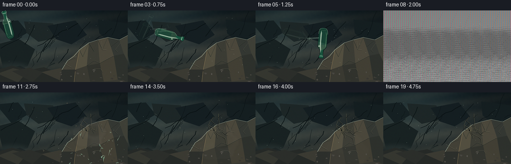
展开代码变化
--- 上一保存版本
+++ 本次保存版本
@@ -15,7 +15,7 @@
W, H = OUT_W * SS, OUT_H * SS
FPS = 4
FRAMES = 20
-IMPACT_FRAME = 8
+IMPACT_FRAME = 7
IMPACT = (174.0, 78.0)
RNG = np.random.default_rng(13317)
@@ -288,15 +288,15 @@
def bottle_pose(frame):
positions = [
- (15.0, 29.0), (35.0, 34.5), (56.0, 41.0), (78.0, 48.0), (101.0, 55.0),
- (123.0, 62.0), (143.0, 69.0), (160.0, 74.0), (174.0, 78.0),
+ (15.0, 29.0), (36.0, 35.0), (59.0, 42.0), (84.0, 50.0), (110.0, 58.0),
+ (134.0, 66.0), (156.0, 73.0), (174.0, 78.0),
]
- if frame <= 8:
+ if frame <= IMPACT_FRAME:
x, y = positions[frame]
else:
x, y = positions[-1]
- angle = -285.0 + frame * 35.0
- scale = 1.02 + 0.012 * min(frame, 8)
+ angle = -285.0 + frame * 40.0
+ scale = 1.02 + 0.014 * min(frame, IMPACT_FRAME)
return x, y, angle, scale
@@ -309,10 +309,10 @@
dx = (xx / SS - IMPACT[0])
dy = (yy / SS - IMPACT[1])
dist = np.sqrt(dx * dx + dy * dy)
- halo = np.exp(-(dist / (4.0 + age * 3.0)) ** 2) * strength
+ halo = np.exp(-(dist / (5.0 + age * 3.5)) ** 2) * strength * 1.16
ring_r = 2.0 + age * 10.0
ring = np.exp(-((dist - ring_r) / (1.2 + age * 0.9)) ** 2) * strength * 0.55
- glow = np.clip(halo * 1.35 + ring, 0, 1.4)
+ glow = np.clip(halo * 1.52 + ring, 0, 1.7)
arr = np.asarray(image, np.float32)
arr[..., 0] += glow * 255
arr[..., 1] += glow * 236
候选 04播放与检查图
点击播放 · 原生 RGB 像素

展开代码变化
--- 上一保存版本
+++ 本次保存版本
@@ -44,7 +44,7 @@
def upscale_field(field, sigma=0.0):
- image = Image.fromarray(np.uint8(np.clip(field, 0, 1) * 255), "L")
+ image = Image.fromarray(np.uint8(np.clip(field, 0, 1) * 255))
if sigma:
image = image.filter(ImageFilter.GaussianBlur(sigma))
return np.asarray(image.resize((W, H), Image.Resampling.BICUBIC), dtype=np.float32) / 255.0
@@ -78,7 +78,7 @@
vignette = np.clip((np.abs(x - 0.53) * 1.05 + np.abs(y - 0.50) * 0.72 - 0.12), 0, 1)
base *= (1.0 - 0.42 * vignette[..., None])
- image = Image.fromarray(np.uint8(np.clip(base, 0, 255)), "RGB").convert("RGBA")
+ image = Image.fromarray(np.uint8(np.clip(base, 0, 255))).convert("RGBA")
draw = ImageDraw.Draw(image, "RGBA")
# Deep, out-of-focus strata give the wall weight without competing with the rock.
@@ -283,7 +283,7 @@
# Preserve the bright drawn details at full contrast over the transparent body.
detail_mask = np.clip((overlay.max(axis=2) - 78.0) / 115.0, 0, 1) * mask
result = result * (1.0 - detail_mask[..., None]) + overlay[..., :3] * detail_mask[..., None]
- return Image.fromarray(np.uint8(np.clip(result, 0, 255)), "RGB").convert("RGBA")
+ return Image.fromarray(np.uint8(np.clip(result, 0, 255))).convert("RGBA")
def bottle_pose(frame):
@@ -317,7 +317,7 @@
arr[..., 0] += glow * 255
arr[..., 1] += glow * 236
arr[..., 2] += glow * 170
- return Image.fromarray(np.uint8(np.clip(arr, 0, 255)), "RGB").convert("RGBA")
+ return Image.fromarray(np.uint8(np.clip(arr, 0, 255))).convert("RGBA")
def crack_paths():
@@ -510,7 +510,7 @@
grain_rng = np.random.default_rng(8000 + frame)
grain = grain_rng.normal(0, 2.0, (H, W, 3))
arr += grain
- return Image.fromarray(np.uint8(np.clip(arr, 0, 255)), "RGB").convert("RGBA")
+ return Image.fromarray(np.uint8(np.clip(arr, 0, 255))).convert("RGBA")
def render_frame(frame, background):
@@ -545,7 +545,7 @@
shake = [(1, -1), (-1, 1), (1, 0)][frame - IMPACT_FRAME - 1]
arr = np.asarray(image)
arr = np.roll(arr, (shake[1] * SS, shake[0] * SS), axis=(0, 1))
- image = Image.fromarray(arr, "RGB")
+ image = Image.fromarray(arr[..., :3], "RGB")
image = image.convert("RGB").resize((OUT_W, OUT_H), Image.Resampling.LANCZOS)
候选 05播放与检查图
点击播放 · 原生 RGB 像素

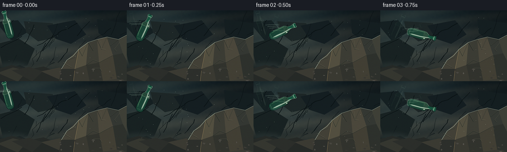
展开代码变化
--- 上一保存版本
+++ 本次保存版本
@@ -545,7 +545,7 @@
shake = [(1, -1), (-1, 1), (1, 0)][frame - IMPACT_FRAME - 1]
arr = np.asarray(image)
arr = np.roll(arr, (shake[1] * SS, shake[0] * SS), axis=(0, 1))
- image = Image.fromarray(arr[..., :3], "RGB")
+ image = Image.fromarray(arr[..., :3])
image = image.convert("RGB").resize((OUT_W, OUT_H), Image.Resampling.LANCZOS)
可观测工具轨迹
实际执行的命令与返回图片。
命令 1exit 0
/bin/bash -c "pwd && rg --files -g '"'!*.mp4'"' -g '"'!*.mov'"' -g '"'!*.avi'"' | sort"
命令 2exit 0
/bin/bash -c "sed -n '1,240p' prompt.txt"
命令 3exit 0
/bin/bash -c "sed -n '1,260p' GENERATION_RULES.md"
命令 4exit 0
/bin/bash -c 'cat task_spec.json'
命令 5exit 0
/bin/bash -c "sed -n '1,260p' artifact_io.py"
命令 6exit 0
/bin/bash -c "sed -n '1,240p' player_template.html"
命令 7exit 0
/bin/bash -c "python - <<'PY' import importlib.util for m in ['numpy','PIL','cv2','imageio','matplotlib','scipy']: print(m, bool(importlib.util.find_spec(m))) PY"
命令 8exit 0
/bin/bash -c 'fc-list | head -20'
命令 9exit 1
/bin/bash -c 'python generate.py'
命令 10exit 1
/bin/bash -c 'python generate.py'
命令 11exit 1
/bin/bash -c 'python generate.py'
命令 12exit 0
/bin/bash -c 'python generate.py'
命令 13exit 0
/bin/bash -c "python - <<'PY' import generate for f in [0,4,7,8]: x,y,a,s=generate.bottle_pose(f) p=generate.transform_points(generate.BOTTLE_POINTS,x,y,a,s) print(f,(x,y,a,s), min(q[0] for q in p),max(q[0] for q in p),min(q[1] for q in p),max(q[1] for q in p)) PY"
命令 14exit 0
/bin/bash -c "python - <<'PY'
from PIL import Image
for f in [0,4,7,8,12,19]:
im=Image.open(f'frames/{f:02d}.png')
print(f, im.getbbox())
PY"命令 15exit 0
/bin/bash -c "nl -ba generate.py | sed -n '462,510p'"
命令 16exit 0
/bin/bash -c 'python generate.py'
命令 17exit 0
/bin/bash -c "python - <<'PY'
from PIL import Image
im=Image.open('frames/04.png')
im.resize((1024,576),Image.Resampling.NEAREST).save('.tmp/frame04_nearest.png')
PY"命令 18exit 0
/bin/bash -c 'python generate.py'
命令 19exit 0
/bin/bash -c "python - <<'PY'
from PIL import Image
import numpy as np
for f in [6,7,8,9,10,11,12]:
a=np.asarray(Image.open(f'frames/{f:02d}.png'))
print(f, a.min(),a.max(),a.mean(), np.mean(np.all(a>250,axis=2)), a[72,128],a[20,20],a[120,200])
PY"命令 20exit 0
/bin/bash -c 'python generate.py'
命令 21exit 0
/bin/bash -c "python - <<'PY'
from pathlib import Path
import json, numpy as np
from PIL import Image
spec=json.loads(Path('task_spec.json').read_text())
frames=sorted(Path('frames').glob('*.png'))
arr=np.load('pixels.npz')['pixels']
print('spec',spec)
print('frame_files',len(frames),frames[0].name,frames[-1].name)
print('pixels_npz',arr.shape,arr.dtype,'range',int(arr.min()),int(arr.max()))
sizes={Image.open(p).size for p in frames}
print('png_sizes',sizes,'unique_frames',len({p.read_bytes() for p in frames}))
print('artifacts',[(p.name,p.stat().st_size) for p in [Path('index.html'),Path('pixels.npz'),Path('inspection.png'),Path('transition_check.png')]])
PY"命令 22exit 0
/bin/bash -c 'python generate.py'
命令 23exit 0
/bin/bash -c "python - <<'PY'
from pathlib import Path
import json, numpy as np
from PIL import Image
spec=json.loads(Path('task_spec.json').read_text())
frames=sorted(Path('frames').glob('*.png'))
pix=np.load('pixels.npz')['pixels']
assert len(frames)==spec['frames']==20
assert pix.shape==(spec['height'],spec['width'],spec['frames'])
assert pix.dtype==np.uint32
assert all(Image.open(p).size==(spec['width'],spec['height']) for p in frames)
assert len({p.read_bytes() for p in frames})==20
assert Path('index.html').is_file() and 'window.__pixelReady' in Path('index.html').read_text()
print('PASS: 20 unique 256x144 RGB frames, packed tensor valid, player generated')
PY
git status --short"视觉工具实际返回图片 1

视觉工具实际返回图片 2
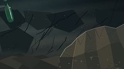
视觉工具实际返回图片 3
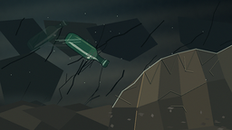
视觉工具实际返回图片 4
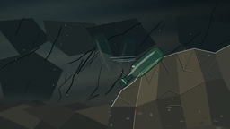
视觉工具实际返回图片 5

视觉工具实际返回图片 6
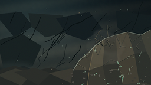
视觉工具实际返回图片 7
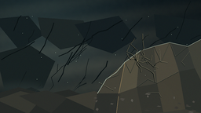
视觉工具实际返回图片 8

视觉工具实际返回图片 9
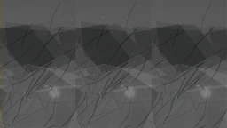
视觉工具实际返回图片 10
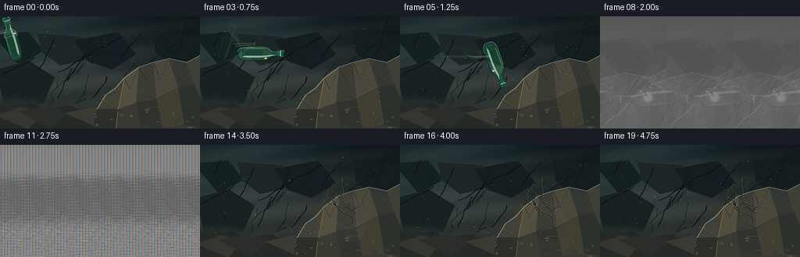
视觉工具实际返回图片 11
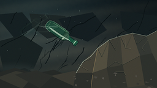
视觉工具实际返回图片 12
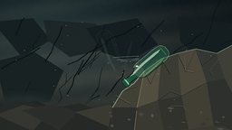
视觉工具实际返回图片 13
视觉工具实际返回图片 14

视觉工具实际返回图片 15
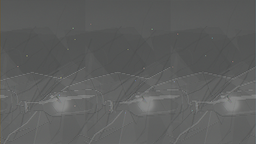
视觉工具实际返回图片 16
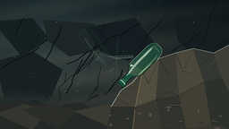
视觉工具实际返回图片 17
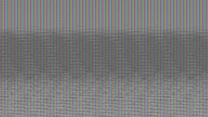
视觉工具实际返回图片 18
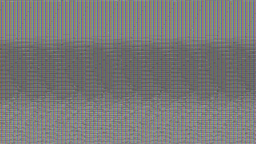
视觉工具实际返回图片 19
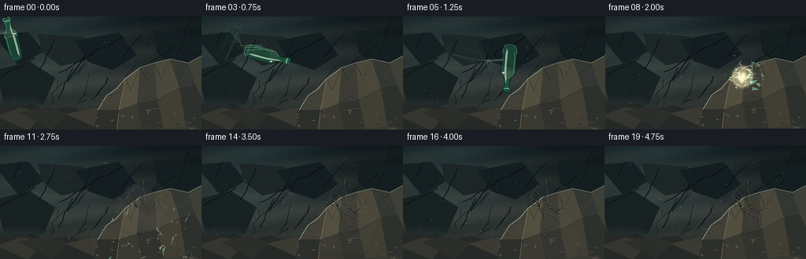
视觉工具实际返回图片 20
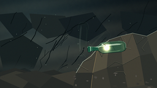
视觉工具实际返回图片 21
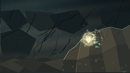
视觉工具实际返回图片 22
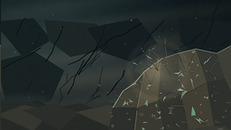
保存候选 5 份；完成命令 23 次；可验证图片返回 22 张。原始 API 响应与完整日志保留在本地。